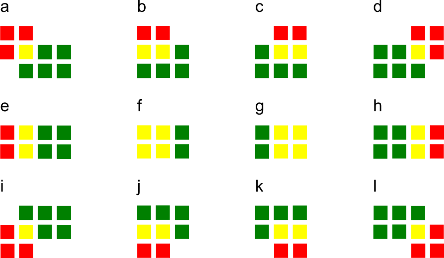

Software Developer Blog: How to do convolutions with doubly blocked Toeplitz matrices
How to do convolutions with doubly blocked Toeplitz matrices
A few weeks ago, Jamie (@neworderofjamie) asked me on the chat whether I knew what doubly blocked Toeplitz matrices are and how they implement convolutions. I had no clue. Since then we have implemented convolutions using doubly blocked Toeplitz matrices in GeNN and found them to be extremely useful and efficient. 1 In this software blog I will give a brief overview on the why and how convolutions relate to doubly blocked Toeplitz matrices. My blog is based on \cite{Salehi2018} but updated to use machine-learning rather than signal-processing conventions and I am trying to avoid using too many unusual ways of re-arranging rows and columns.
The why
Let us consider the convolution of a \(2\times 2\) kernel with a \(3\times 2\) layer. We denote the kernel as \[ K= \left(\matrix{ k_{11} & k_{12} \cr k_{21} & k_{22}}\right) \] and the layer as \[ I= \left(\matrix{ i_{11} & i_{12} & i_{13} \cr i_{21} & i_{22} & i_{23}} \right). \] Then the convolution in the machine learning use of the term is calculating the cross-correlation of the kernel "moving across" the layer as illustrated in this diagram:  Green squares illustrate entries of \(I\) and red squares entries of \(K\). The overlapping entries are shown in yellow.
For the first non-zero entry at \((1,1)\) of the result matrix \(R\), we have the situation of panel a, \(r_{11} = k_{22} i_{11}\). Then the kernel moves one over (panel b), and \(r_{12} = k_{21}i_{11} + k_{22} i_{12}\). Then (panel c), \(r_{13} = k_{21}i_{12} + k_{22} i_{13}\) and (panel d), \(r_{14} = k_{21}i_{13} \).
For the second row, \(r_{21} = k_{12} i_{11} + k_{22} i_{21} \) (panel e), \(r_{22} = k_{11} i_{11} + k_{12} i_{12} + k_{21} i_{21} + k_{22} i_{22} \) (panel f), \(r_{23} = k_{11}i_{12} + k_{12} i_{13} + k{21} i_{22} + k_{22} i_{23} \) (panel g), and \(r_{24} = k_{11}i_{13} + k_{21} i_{33} \) (panel h).
And similar for the third row (panels i-l).
If we express this as a matrix multiplication of a matrix formed from the entries of the kernel and a vector, unrolled row-wise, from the layer, we get the formula \[ \left(\matrix{ k_{22} & 0 & 0 & 0 & 0 & 0 \cr k_{21} & k_{22} & 0 & 0 & 0 & 0 \cr 0 & k_{21} & k_{22} & 0 & 0 & 0 \cr 0 & 0 & k_{21} & k_{22} & 0 & 0 \cr k_{12} & 0 & 0 & k_{22} & 0 & 0 \cr k_{11} & k_{12} & 0 & k_{21} & k_{22} & 0 \cr 0 & k_{11} & k_{12} & 0 & k_{21} & k_{22} \cr 0 & 0 & k_{11} & 0 & 0 & k_{21} \cr 0 & 0 & 0 & k_{11} & 0 & 0 \cr 0 & 0 & 0 & k_{12} & k_{11} & 0 \cr 0 & 0 & 0 & 0 & k_{12} & k_{11} \cr 0 & 0 & 0 & 0 & 0 & k_{12}}\right) \cdot \left(\matrix{ i_{11} \cr i_{12} \cr i_{13} \cr i_{21} \cr i_{22} \cr i_{23}}\right) \]
Now one can already see that the matrix formed from the kernel entries has a very peculiar shape - the shape of a doubly blocked Toeplitz matrix
Doubly blocked Toeplitz matrix
A Toeplitz matrix is a matrix where the values along all diagonals are constant, i.e.
\[ \left( \matrix{ a_{0} & a_{-1} & a_{-2} & \cdots & \cdots & \cdots & a_{-(N-1)} \cr a_{1} & a_{0} & a_{-1} & a_{-2} & & & \vdots \cr a_{2} & a_{1} & a_{0} & a_{-1} & & & \vdots \cr \vdots & \ddots & \ddots & \ddots & \ddots & \ddots & & \vdots \cr \vdots & & & \ddots & a_{0} & a_{-1} & a_{-2} \cr \vdots & & & & a_{1} & a_{0} & a_{-1} \cr a_{M-1} & \cdots & \cdots & \cdots & a_{2} & a_{1} & a_{0} } \right) . \]
Furthermore, if we build a matrix \(A\) out of Toeplitz sub-matrices \(A_{k}\) \emph{and} the structure of \(A\) with respect to these submatrices is also Toeplitz:
\[ A = \left( \matrix{ A_{0} & A_{-1} & \cdots & A_{-(L-1)} \cr A_{1} & A_{0} & \cdots & A_{-(L-2)} \cr \vdots & \vdots & \ddots & \vdots \cr A_{K} & A_{K-1} & \cdots & A_{0}} \right), \]
then, this matrix is called a doubly-blocked Toeplitz matrix. A standard way to generate a Toeplitz matrix from a vector \(v\) is to use \(v\) as the first column vector, then make one cyclic permutation and use it as the second column vector and so on.
The method
As we have seen on the example above, 2D convolution operations can be expressed as multiplication by a doubly-blocked Toeplitz matrix. As a general method, applied to the example above, to convolve \(K\) with \(I\), we first flip \(K\) across the horizontal and vertical axis and pad it to the output size \((I_\text{height} + K_\text{height} - 1) \times (I_\text{width} + K_\text{width} - 1)\) of the convolution. For instance, here, the \(2 \times 3\) layer \(I\) covolved by \(K\) above, leads to output size \(3 \times 4\). Depending on the padding mode used by the convolution, typically, only part of this output is actually required. The flipped and padded kernel \(K\) from above is \[ K_\text{pad}= \left( \matrix{ k_{22} & k_{21} & 0 & 0 \cr k_{12} & k_{11} & 0 & 0 \cr 0 & 0 & 0 & 0} \right) \]
We then convert each {\em row vector} of this matrix into Toeplitz matrices \(F_i\) as described above: \[ F_0= \left( \matrix{ k_{22} & 0 & 0 \cr k_{21} & k_{22} & 0 \cr 0 & k_{21} & k_{22} \cr 0 & 0 & k_{21}} \right) \quad F_1= \left( \matrix{ k_{12} & 0 & 0 \cr k_{11} & k_{12} & 0 \cr 0 & k_{11} & k_{12} \cr 0 & 0 & k_{11}} \right) \quad F_2= \left( \matrix{ 0 & 0 & 0 \cr 0 & 0 & 0 \cr 0 & 0 & 0 \cr 0 & 0 & 0} \right) \] and, finally, assemble these into a doubly blocked Toeplitz matrix \(F\):
\[ F= \left( \matrix{ F_0 & F_2 \cr F_1 & F_0 \cr F_2 & F_1 \cr } \right) \]
The convolution of \(K\) with \(I\) is then given by turning the matrix \(I\) into a column vector by stacking up its row vectors, \[ I_\text{col} = \left( \matrix{ i_{11} \cr i_{12} \cr i_{13} \cr i_{21} \cr i_{22} \cr i_{23}} \right) \]
and multiplying F from the left, \[ R_{\text{col}} = F \cdot I \quad \Leftrightarrow \quad R_{\text{col},j}= \sum_i F_{ji}I_i \]
Finally, \(R_{\text{col}}\) can be reinterpreted as the output matrix \(R\) by arranging its entries row-wise in a \(3\times 4\) matrix.
There we have it - convolution (in the machine learning sense, i.e. corss-correlation) of a kernel \(K\) with a layer \(I\) expressed as the product of a doubly blocked Toeplitz matrix derived from \(K\) with the column vector of the row-wise unrolled entries from \(I\).